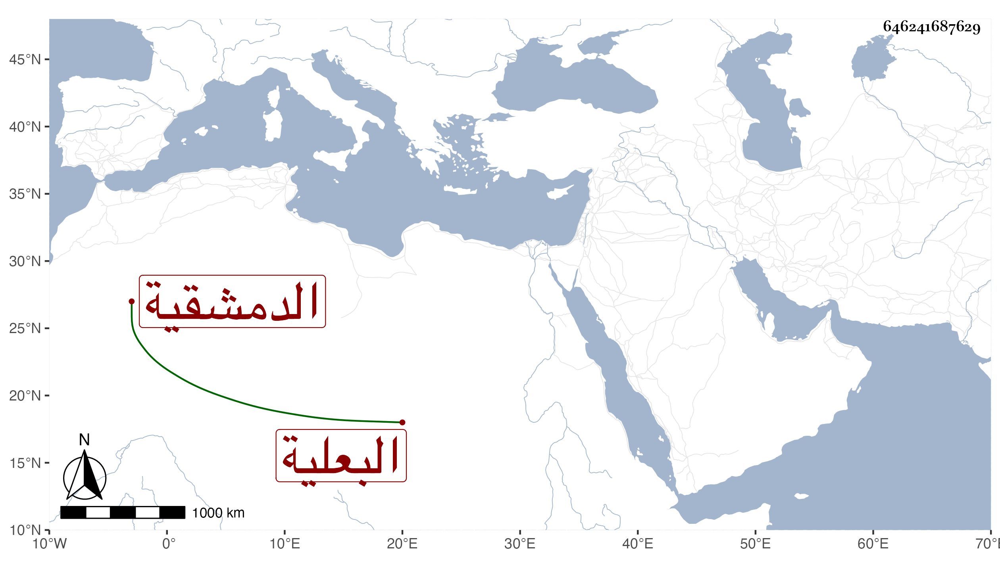

0902Sakhawi.DawLamic.ITO20230111-ara1.EIS1600.646241687629
Biography ID: 646241687629
135
خديجة ابنة إبراهيم بن إسحاق بن إبراهيم بن سلطان البعلية ثم الدمشقية ولدت قبل العشرين وسبعمائة وأحضرت على القسم ابن مظفر بن عساكر فكانت آخر من حدث عنه بالسماع في الدنيا واجاز لها أبو نصر بن الشيرازي واسحق الآمدي والواني والدبوسي وابن سيد الناس والقطب الحلبي وعبد الله بن علي الصنهاجي وآخرون من الشاميين والمصريين، وحدثت بالكثير سمع منها الائمة واكثر عنها شيخنا . ماتت في سنة ثلاث وقد قاربت التسعين وتبعه المقريزي في عقوده في ذكرها رحمها الله .
